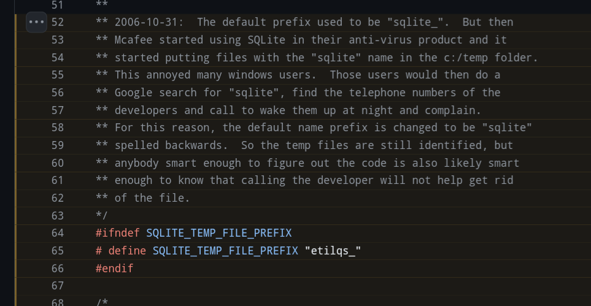
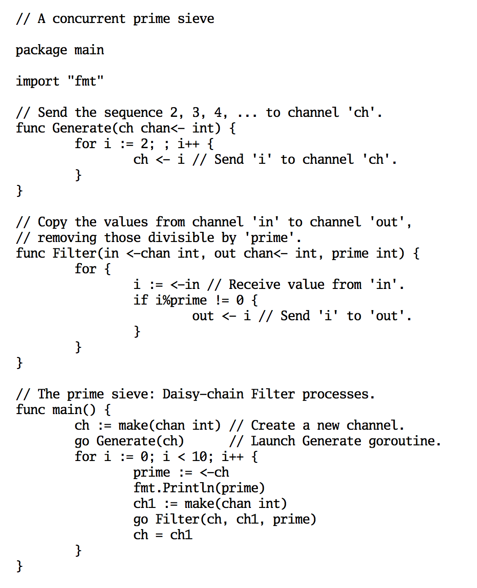
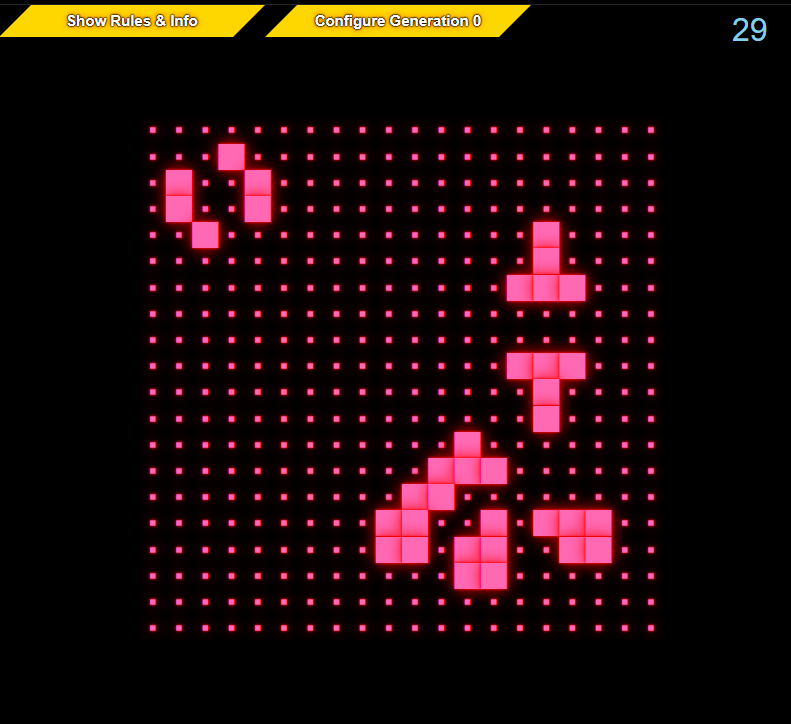

Random Weird Things - Part Ⅱ
Published at 2025-02-08T11:06:16+02:00
Every so often, I come across random, weird, and unexpected things on the internet. I thought it would be neat to share them here from time to time. This is the second run.
2024-07-05 Random Weird Things - Part Ⅰ
2025-02-08 Random Weird Things - Part Ⅱ (You are currently reading this)
2025-08-15 Random Weird Things - Part Ⅲ
2026-06-06 Random Weird Things - Part Ⅳ
/\_/\ /\_/\
( o.o ) WHOA!! ( o.o )
> ^ < > ^ <
/ \ MOEEW! / \
/______\ /______\
Table of Contents
11. The SQLite codebase is a gem
Check this out:

Source:
https://wetdry.world/@memes/112717700557038278
Go Programming
12. Official Go font
The Go programming language has its own official font, called "Go Font." There's a monospace version for code and a proportional one for regular text.
Check out some Go code displayed using the Go font:

https://go.dev/blog/go-fonts
I found it interesting and/or weird, as Go is a programming language. Why should it bother having its own font? I have never seen another open-source project like Go do this. But I also like it. Maybe I will use it in the future for this blog :-)
13. Go functions can have methods
Functions on struct types? Well known. Functions on types like int and string? It's also known of, but a bit lesser. Functions on function types? That sounds a bit funky, but it's possible, too! For demonstration, have a look at this snippet:
package main
import "log"
type fun func() string
func (f fun) Bar() string {
return "Bar"
}
func main() {
var f fun = func() string {
return "Foo"
}
log.Println("Example 1: ", f())
log.Println("Example 2: ", f.Bar())
log.Println("Example 3: ", fun(f.Bar).Bar())
log.Println("Example 4: ", fun(fun(f.Bar).Bar).Bar())
}
It runs just fine:
❯ go run main.go
2025/02/07 22:56:14 Example 1: Foo
2025/02/07 22:56:14 Example 2: Bar
2025/02/07 22:56:14 Example 3: Bar
2025/02/07 22:56:14 Example 4: Bar
macOS
For personal computing, I don't use Apple, but I have to use it for work.
14. ß and ss are treated the same
Know German? In German, the letter "sharp s" is written as ß. ß is treated the same as ss on macOS.
So "Maß" and "Mass" end up being the same filename on macOS. Check this out:
❯ touch Maß
❯ ls -l
-rw-r--r--@ 1 paul wheel 0 Feb 7 23:02 Maß
❯ touch Mass
❯ ls -l
-rw-r--r--@ 1 paul wheel 0 Feb 7 23:02 Maß
❯ rm Mass
❯ ls -l
❯ touch Mass
❯ ls -ltr
-rw-r--r--@ 1 paul wheel 0 Feb 7 23:02 Mass
❯ rm Maß
❯ ls -l
15. Colon as file path separator
MacOS can use the colon as a file path separator on its ADFS (file system). A typical ADFS file pathname on a hard disc might be:
ADFS::4.$.Documents.Techwriter.Myfile
I can't reproduce this on my (work) Mac, though, as it now uses the APFS file system. ADFS is old; APFS is what Macs use now.
https://social.jvns.ca/@b0rk/113041293527832730
16. Polyglots - programs written in multiple languages
A polyglot is a program that is valid in multiple programming languages without any changes. People write them for fun, exploiting syntax overlaps between the languages.
Check out my very own polyglot:
The fibonatti.pl.c Polyglot
17. Languages, where indices start at 1
Some languages start array indices at 1 instead of 0. Switching between those and the usual 0-based ones (C, Java, Python, ...) is a nice source of off-by-one errors.
Languages with one-based indexing:
- Fortran
- MATLAB
- Lua
- R (for vectors and lists)
- Smalltalk
- Julia (by default, although zero-based indexing is also possible)
foo.lua example:
arr = {10, 20, 30, 40, 50}
print(arr[1]) -- Accessing the first element
❯ lua foo.lua
10
18. Perl Poetry
Perl Poetry is Perl code written as a poem. It has to be syntactically valid Perl and still read as a poem. Perl's syntax is loose enough to make that possible.
See this Poetry of my own; the Perl interpreter does not yield any syntax error parsing that. But also, the Peom doesn't do anything useful then executed:
# (C) 2006 by Paul C. Buetow
Christmas:{time;#!!!
Children: do tell $wishes;
Santa: for $each (@children) {
BEGIN { read $each, $their, wishes and study them; use Memoize#ing
} use constant gift, 'wrapping';
package Gifts; pack $each, gift and bless $each and goto deliver
or do import if not local $available,!!! HO, HO, HO;
redo Santa, pipe $gifts, to_childs;
redo Santa and do return if last one, is, delivered;
deliver: gift and require diagnostics if our $gifts ,not break;
do{ use NEXT; time; tied $gifts} if broken and dump the, broken, ones;
The_children: sleep and wait for (each %gift) and try { to => untie $gifts };
redo Santa, pipe $gifts, to_childs;
redo Santa and do return if last one, is, delivered;
The_christmas_tree: formline s/ /childrens/, $gifts;
alarm and warn if not exists $Christmas{ tree}, @t, $ENV{HOME};
write <<EMail
to the parents to buy a new christmas tree!!!!111
and send the
EMail
;wait and redo deliver until defined local $tree;
redo Santa, pipe $gifts, to_childs;
redo Santa and do return if last one, is, delivered ;}
END {} our $mission and do sleep until next Christmas ;}
__END__
This is perl, v5.8.8 built for i386-freebsd-64int
More Perl Poetry of mine
19. CSS3 is turing complete
Turns out CSS3 is Turing complete. You can simulate a Turing machine with nothing but CSS animations and styles, without any JavaScript. Keyframe animations can encode state transitions, which is wild considering CSS is supposed to just make things look pretty.
Is CSS turing complete?
Check out this 100% CSS implementation of the Conways Game of Life:

CSS Conways Game of Life
Conway's Game of Life is itself Turing complete, so if you can implement it in CSS, CSS must be Turing complete too.
20. The biggest shell programs
One would think that shell scripts are only suitable for small tasks. Well, I must be wrong, as there are huge shell programs out there (up to 87k LOC) which aren't auto-generated but hand-written!
The Biggest Sell Programs in the World
My Gemtexter (bash) is only 1329 LOC as of now. So it's tiny.
Gemtexter - One Bash script to rule it all
I hope you had some fun. E-Mail your comments to paul@nospam.buetow.org :-)
Back to the main site